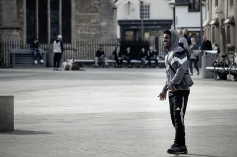
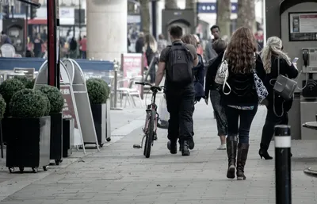
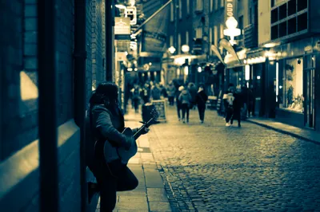
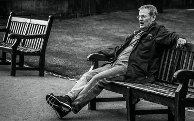
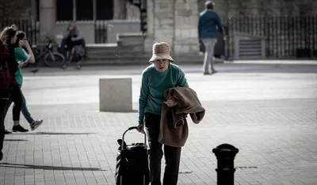
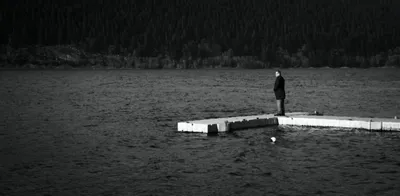
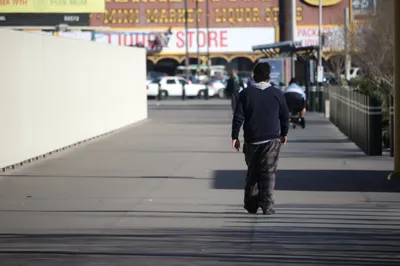
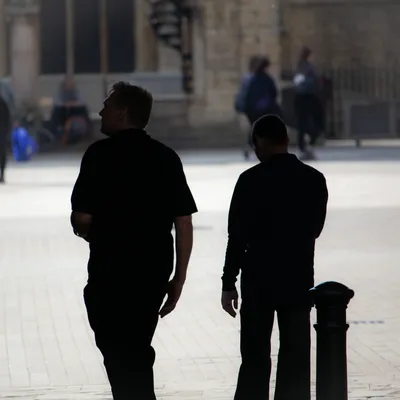
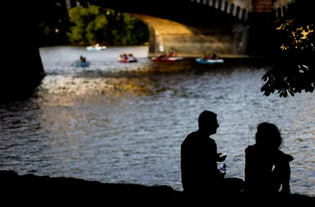
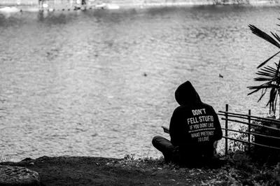

Photography · · 7 min read
Photographing Strangers
Street photography is legal in most places and comfortable in almost none of them. Where the law actually lands across 52 jurisdictions, and the four tests I use before I raise a camera at someone.
Photograph © Ken Reid
Photographing Strangers
I've taken photos of many people without them knowing or consenting. Sometimes, they do know, but don't consent - I'll take a photo and they turn around and see my lens pointing at them. So far no one has asked me to delete any photos, but I've definitely had stares and glares.
Street photography stirs some interesting questions. It's legal in most public places (though not in the UAE or South Korea, and France is far stricter than visitors expect), but there are lots of legal ways you can be an asshole.

Legality
In most jurisdictions, including the UK and US, photographing people in public spaces is broadly legal. There's a reduced expectation of privacy in public, and the whole documentary tradition depends on that freedom.
"Broadly legal" covers three quite different rules, though, and which one you are under depends on where your feet are. Wikimedia Commons maintains a country-by-country list of consent requirements for pictures of identifiable people, because it has to: it hosts the photographs. Of the 52 jurisdictions it documents, the split runs like this.
| What the law asks of you | Jurisdictions | Notes |
|---|---|---|
| Nothing: shoot and publish without asking | 18 | Including India, the US, Iran*, the UK and South Africa |
| Consent to publish, but not to shoot | 18 | Including Russia, Ethiopia, Mexico, the Philippines and Germany |
| Consent before you press the shutter | 14 | Including China, Indonesia, Brazil, Japan and Turkey |
| Unsettled, or different inside one country | 2 | Canada (province by province) and Hong Kong |
Counts from the Wikimedia Commons country-specific consent requirements guideline. It documents 52 jurisdictions out of roughly 195, and says plainly that a country's absence from the list proves nothing: the UAE is not on it, and criminalises photographing a person without consent under Article 44 of Federal Decree-Law 34 of 2021. *Iran sits in the top row on one narrow 2007 statute about women-only spaces and private gatherings, which shows how much work "with exceptions" is doing in every row above. None of this is legal advice.
That says nothing about the ethics or social implications, of course. Cultures vary from town to town, never mind across country borders. But legal is the floor, and plenty of legal things are unkind, so treating the law as the whole of the ethics is unwise. The question I care about is "should I, and how", and the law can perhaps give insight into some broad strokes of social acceptance, but not ethics.
The context has changed since the old masters. When Cartier-Bresson or Vivian Maier shot a stranger, that photograph lived in a print, a gallery, a book, or perhaps in a dusty old film cartridge in a chest somewhere. A bounded, slow world.
A photograph now can be uploaded, geolocated, reverse-image-searched and attached to a name in minutes. The same click that once made a fleeting image now makes a searchable, permanent, findable record of a person who never agreed to be in it. So the ethics can't be inherited wholesale from a pre-internet age. And that cuts both ways: we live in the era of Flock cameras, smartphones, and TikTok, Twitch, Facebook and YouTube livestreamers.

A working framework
We can also consider paparazzi, as the worst kind of "well, it's legal" defence. Sure, it's legal, but camping outside someone's home, place of work or school to take non-consensual photos, hoping to make a dollar selling them to some awful supermarket rag, is still a choice you made (who needs AI slop when you can peruse human created slop?).
I think there's something on the other side of this that I haven't heard discussed: photography paralysis. Being so afraid of the first that you never take a plain photograph of human life at all. That's a real loss, because people are some of the most important things we can photograph. Someone just living their life, representing a common interest, feeling and life can echo something shared, capture beautiful moments and collective sadness. There is art in people being people, and capturing a fleeting moment forever. Not capturing that is almost like destroying a beautiful painting or poem.

How I draw my bounds
The dignity test. Before I publish (and often before I shoot), I ask whether the image honours the person or exploits them. A photograph that shows a stranger as interesting, dignified, fully human is a different object from one that invites the viewer to laugh at them, or gawk at them, or one that is really just virtue signalling from me.
If the picture's whole appeal is that the subject is a spectacle, I'll have basically made a zoo and considered that person an animal.

The power gradient. This is the one that does the most work for me. Photograph across or up the power gradient, rarely down it.
A candid of a confident person striding through their city is wonderful. A candid of someone at their most vulnerable (homeless, grieving, drunk, struggling) turns their worst moment into my content. It's the same worry I had about ruin porn: a beautiful photograph of someone's suffering is still a photograph of suffering, and making it beautiful doesn't mean you're not personally benefitting from another's suffering. That doesn't mean you can't take photos of these things, but you need to be more creative in your photos. Avoiding faces or other identifying marks (tattoos, nametags) means you can show, for example, homelessness in Las Vegas, without it being exploitation. It can even be powerful, eye-opening, educational and a rallying cry.

The ask-after option. You don't always have to choose between a stolen candid and a stiff posed shot. Shoot first, then approach, show them the frame, offer to delete it or to send it. It turns a taking into something closer to a collaboration, and people are delighted more often than not in my experience. It doesn't cost the "purity" of the unaware candid but it does buy a clear conscience and, often, can make someone's day (and maybe get you an extra Instagram follower if that's something you care about).

Consider obvious boundaries. Is the person you want to photograph on their own property, e.g. through a window or somewhere else they would normally expect privacy? Or are you in their home with them - if so, consider asking - taking photos inside someone's home can feel like an invasion of privacy to them.
Use the discomfort
Documentary photography of any kind requires you to have an opinion about your subject, not merely a technically good composition. The discomfort I feel raising a camera at a stranger keeps me asking the dignity question and checking the power gradient, so don't squash it down entirely, it can be informative, or at least help you check yourself.

So I don't want to talk myself out of the hesitation, and I don't want you to either. The best street photography was made by people who clearly loved their subjects, and you can see it in the frames: the humans in them are seen, not caught.
Keep the hesitation. Ask the dignity question, check the gradient, leave other people's kids out of it, and take the photograph when the answers come out right. So, Wheaton's Law.
Some of the frames








Common questions
Isn't asking permission going to kill the candid, spontaneous quality?
For the unaware candid, yes. That's what the ask-after option is for: shoot the spontaneous frame first, then approach. You keep the candid moment and add consent. That being said, of course be safe. Don't approach (or even photograph, ideally) people who you suspect might react poorly.
Doesn't all this hand-wringing just mean you should never do street photography?
It takes some social confidence, and there's always an element of being unsafe when dealing with strangers. I think the "hand-wringing" is just about making sure we maintain our ethics while conducting our artform.
What about candids where the person is just part of a wider scene?
Eh, it varies. Some laws don't care, some do, and ethically, I think there's definitely a level of "well, you are in public, people will perceive you - if you don't want to be perceived, don't be in public" that can be applied to group photos much more so than individual shots.